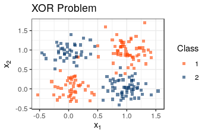

Using Random Forests for Accelerometer Data Classification
Presented by Jiyang Wen and Eric Bridgeford
Follow the slides: ericwb.me/lectures/class/bayesian_ss/bayesian_final.html
What we will cover
- Introduction to Decision Trees
- Introduction to Random Forests
- Challenges of the Accelerometer Data and Feature Screening
- Next Steps
Decision Trees
What is a Decision Tree?
- A decision tree is a set of rules and actions
- Intuitive: Natural approach to problem solving
- We're grad students; of course we don't have 25 dollars

What Did we Just Do?
- Goal: Deciding how to eat
- Nodes: Propose a question
- Construct a "split": Do I continue along the tree to the left, or the right?
- Leaves: Decisions
- I'm hungry, and I don't have $25, so I buy a hamburger
Extending Decision Trees to Continuous Data
Making a Split
- Check $d_j = 1, ..., p$, trying $\tau_{ij} = (X_{ij})_i$
- Find the split $(d^*_{(1)}, \tau^*_{(1)})$ that minimizes the class impurity
Obtaining a Decision Rule
- Keep pushing the splits down, until we reach a maximum depth, or there are no more samples
- The resulting partitions/splits form the "decision rule"
From Trees to Forests
How can we Augment the Decision Tree?
- Clear that the Decision Tree Approach is a powerful foundation
- Many classes of supervised learning algorithms can't handle the XOR Problem
- We are often concerned with the $p \gg 1$ case
- Decision Trees tend to overfit
- How can we leverage the power of the decision tree, but improve generalizability?
Planting a Forest
- Bootstrap AGGregating (bagging): Given $n$ points, sample $n'_k$ uniformly with replacement for $k = 1, ..., m$
- Train $m$ decision trees on the bootstrapped samples
- Instead of trying all features, try $d \ll p$ of them
Majority Rules
- $\hat y(x) = \textrm{argmax}_{p}\sum_{i = 1}^k\mathbb{I}\{p_k(x) = p\}$
Example Forest Prediction

Challenges of the Accelerometer Data and Feature Screening
Making Sense of Lots (and lots) of Data Points
- Each subject has about 2 million time points taken from any of 4 locations
- left wrist, left hip, left ankle, right ankle
- each time point is labelled according to the activity being performed
- Problem: the data are noisy, and alone may not be informative for a classification task
Deciding what will be Informative
- Naive Idea: downsample by time windows of width $w$
- Goal: Given a time window $i$, compute summary measures $X_i$
- mean, quantiles, min, max of x, y, z, azimuth, vector magnitude, elevation
- vmc
- Attempt at both the aggregate (across location) and individual accelerometer location levels
Multiscale Generalized Correlation
- Goal is to characterize whether the naive summary measures we have computed are informative
- Further question: can we detect an effect using only a single accelerometer location?
- Independence Test: Does there exist a dependency between $X_i$ and $Y_i$?
- Future Idea: "Feature Screening"
Procedure for Effect Size Investigation
- For accelerometer location $L$ (+All), resolution $R$, and activity $A$ (+All)
- Compute the summary metrics $X_i$ at resolution $R$ and location $L$
- Let $Y_i = \mathbb I(task_i = A)$
- Compute $MGC_{L,R,A}$ and $p$-value
- Break up and Fisher correct the $p$-values
Feature Screening Results (by Accelerometer)
Procedure for Classification Evaluation
- For accelerometer location $L$ (+all), resolution $R$
- Perform $10$-fold cross validation, to obtain misclassification rate $e_{L,R}$
- Train on all of the data, producing trained forest $F_{L,R}$
- Compute feature importance $I_{L,R,j}$ for each feature $j$ on forest $F_{L,R}$
- Make sure forests have love, tenderness, and care (and 96 cores/1 TB RAM)